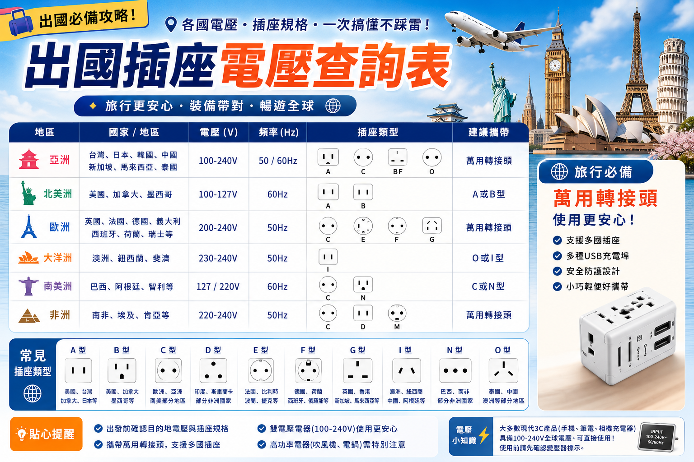

✈ 用最少預算，走最多地方
🏠 台灣標準：A型插頭（扁雙腳）| 110V | 60Hz
大部分手機/筆電充電器標示 100-240V，全球通用不需變壓器。看充電器背面標籤確認。
大部分手機/筆電充電器標示 100-240V，全球通用不需變壓器。看充電器背面標籤確認。

🌏 亞洲各國插座對照
| 國家 | 插頭型號 | 電壓 | 頻率 | 需要轉接頭？ | 需要變壓器？ |
|---|---|---|---|---|---|
| 🇯🇵 日本 | A型（窄腳） | 100V | 50/60Hz | ❌ 幾乎不用 | ❌ 不需要 |
| 🇰🇷 韓國 | C型（圓腳） | 220V | 60Hz | ✅ 需要C型 | ⚠️ 吹風機要 |
| 🇹🇭 泰國 | A/B/C型 | 220V | 50Hz | ❌ A型可直接 | ⚠️ 吹風機要 |
| 🇻🇳 越南 | A/C型 | 220V | 50Hz | ⚠️ 建議帶C型 | ⚠️ 吹風機要 |
| 🇲🇲 緬甸 | C/D/F/G型 | 230V | 50Hz | ✅ 需要萬國 | ⚠️ 吹風機要 |
| 🇵🇭 菲律賓 | A/B型 | 220V | 60Hz | ❌ A型可直接 | ⚠️ 吹風機要 |
| 🇨🇳 中國 | A/I型 | 220V | 50Hz | ❌ A型可直接 | ⚠️ 吹風機要 |
| 🇭🇰 香港 | G型（英標） | 220V | 50Hz | ✅ 需要G型 | ⚠️ 吹風機要 |
| 🇸🇬 新加坡 | G型（英標） | 230V | 50Hz | ✅ 需要G型 | ⚠️ 吹風機要 |
| 🇲🇾 馬來西亞 | G型（英標） | 240V | 50Hz | ✅ 需要G型 | ⚠️ 吹風機要 |
| 🇮🇩 峇里島 | C/F/G型 | 230V | 50Hz | ✅ 需要C型或G型 | ⚠️ 吹風機要 |
| 🇮🇳 印度 | C/D/M型 | 230V | 50Hz | ✅ 需要D型 | ⚠️ 吹風機要 |
🌍 歐美澳各國插座對照
| 國家/地區 | 插頭型號 | 電壓 | 頻率 | 需要轉接頭？ |
|---|---|---|---|---|
| 🇺🇸 美國 | A/B型 | 120V | 60Hz | ❌ 不需要 |
| 🇨🇦 加拿大 | A/B型 | 120V | 60Hz | ❌ 不需要 |
| 🇬🇧 英國 | G型 | 230V | 50Hz | ✅ 需要G型 |
| 🇫🇷 法國 | E型 | 230V | 50Hz | ✅ 需要C/E型 |
| 🇩🇪 德國 | C/F型 | 230V | 50Hz | ✅ 需要C型 |
| 🇦🇺 澳洲 | I型 | 230V | 50Hz | ✅ 需要I型 |
| 🇳🇿 紐西蘭 | I型 | 230V | 50Hz | ✅ 需要I型 |
🔧 轉接頭推薦
🇰🇷 韓國/歐洲 C型
圓腳轉扁腳
約 NT$50-100
🇬🇧 英國/新加坡 G型
三孔方腳
約 NT$80-150
🌍 萬國轉接頭
全球通用（USB+C型+G型+I型）
約 NT$200-500
台灣人出國建議：去日本不需轉接頭。去韓國帶C型。去泰國/越南/菲律賓不需（A型通用）。去新加坡/香港帶G型。不確定就帶萬國轉接頭。
❓ 常見問題
🔋 行動電源與充電實用建議
出國旅行最怕手機沒電，尤其是用 Google Maps 導航和查交通的時候。建議帶一個一萬毫安培以上的行動電源，大約可以充手機兩到三次。如果帶筆電，則需要兩萬毫安培以上且支援高功率輸出的款式。另外要注意，超過兩萬七千毫安培的行動電源不能帶上飛機，購買時要注意容量標示。在機場和咖啡廳充電時，建議帶一條短版充電線，不佔空間又不會妨礙別人。日本和韓國的便利商店很多都有提供免費充電插座，但東南亞就比較少見，出門前一定要把電充滿。最後一個小技巧：把飛航模式打開再充電，速度會快很多，在機場短暫停留時特別實用。
出國前最重要的事就是確認目的地的插座類型和電壓。台灣使用 A 型插座和 B 型插座，電壓一百一十伏特，跟日本和美國一樣。如果你去的地方電壓是二百二十伏特，大部分手機和筆電的充電器都支援全電壓，插上轉接頭就能用。但吹風機和電捲棒通常是單電壓的，帶去二百二十伏特的國家會燒壞，千萬要注意。建議出發前檢查每個電器上的標籤，確認輸入電壓範圍。轉接頭建議買萬用型的，一顆大約台幣兩百到五百，可以適用全球一百五十個以上的國家，比買單一國家的轉接頭更划算。如果你常常出國，投資一個有 USB 充電孔的萬用轉接頭，可以同時幫手機和平板充電，非常方便。
台灣的插頭是什麼型號？
台灣使用A型插頭（扁雙腳，跟美國一樣），電壓110V/60Hz。大部分台灣電器（手機充電器、筆電）支援100-240V寬電壓，不需變壓器。吹風機、電捲棒等高功率電器通常只有110V，到220V國家需要變壓器。
去日本需要轉接頭嗎？
日本也是A型插頭但一腳較窄，台灣插頭大部分可插入。電壓100V/60Hz跟台灣110V接近，手機/筆電完全OK。
去韓國需要轉接頭嗎？
韓國使用C型插頭（圓雙腳），電壓220V/60Hz。需要C型轉接頭。手機充電器不需變壓器，吹風機需要。
去泰國需要轉接頭嗎？
泰國同時用A/B/C型插座。台灣A型插頭可直接使用，但建議帶C型轉接頭以防遇到圓孔插座。電壓220V/50Hz。
什麼電器需要變壓器？
需要變壓器：吹風機、電捲棒、直髮器、電動牙刷充電座（非USB）、電熱水瓶等高功率/單電壓電器。不需要：手機/筆電/平板/相機充電器（標示100-240V）。看充電器背面標籤確認。
📖 延伸閱讀


🔌 各國插座電壓完全指南
出國最怕手機充不了電！不同國家的插座形狀和電壓都不一樣，帶錯轉接頭真的會哭。這篇幫你一次搞懂。
🇯🇵 日本
- 🔌 插座類型：A 型（雙扁腳）
- ⚡ 電壓：100V（比台灣低）
- ✅ 台灣插頭可直接用
- ⚠️ 充電會稍慢，但不影響使用
🇰🇷 韓國
- 🔌 插座類型：C 型（雙圓腳）/ SE 型
- ⚡ 電壓：220V
- ❌ 台灣插頭不可直接用
- 🔧 需帶圓腳轉接頭
🇹🇭 泰國
- 🔌 插座類型：A + B + C 混用
- ⚡ 電壓：220V
- ✅ 飯店多數有 A 型插座
- 🔧 建議仍帶萬用轉接頭
🇻🇳 越南
- 🔌 插座類型：A + C 混用
- ⚡ 電壓：220V
- ✅ 大城市 A 型可充
- 🔧 鄉下地區需圓腳轉接
🛒 萬用轉接頭推薦
- 🏆 萬國通用款（NT$150-300）：一顆走天下，支援 150+ 國家
- 🔋 USB 多孔款（NT$300-600）：轉接 + 充電孔，手機平板同時充
- ⚡ 變壓功能款（NT$500+）：220V→110V，吹風機/電湯匙可用
- 💡 小技巧：買有 USB-C PD 的款式，筆電也能充
⚡ 電壓與充電常見問題
出國充電最怕兩件事：插頭插不進去和電壓不對燒壞電器。其實只要搞懂基本原理，這些問題都不難解決。首先，全世界大致分為兩種電壓系統：一百到一百二十伏特的低壓系統（台灣、日本、美國）和二百二十到二百四十伏特的高壓系統（韓國、中國、東南亞、歐洲）。
好消息是，現代大部分電子產品的充電器都支援全電壓，也就是一百到二百四十伏特都能用。你只要看充電器上標示的規格，如果寫著「輸入一百到二百四十伏特」，那就表示插上轉接頭就能直接用，不需要變壓器。手機、筆電、平板、相機的充電器幾乎都是全電壓的，所以帶這些東西出國完全不用擔心。
需要注意的是吹風機、電捲棒、電湯匙這類高功率電器。這些通常是單電壓的，帶到二百二十伏特的國家使用會直接燒壞，甚至有火災危險。如果你真的需要吹風機，建議在當地買一個便宜的旅行用吹風機，或住有提供吹風機的飯店。另一個選擇是買有變壓功能的萬用轉接頭，但要注意它的功率限制，通常只能支援五百瓦以下，吹風機動輒一千瓦以上是不行的。
充電速度方面，在日本使用台灣的充電器不會有問題，但因為日本電壓只有一百伏特，充電速度會比在台灣慢一些。如果帶支援快充的手機和充電器，建議帶一個支援高功率輸出的行動電源，在長途移動時隨時補充電量，就不會因為充電慢而焦慮了。